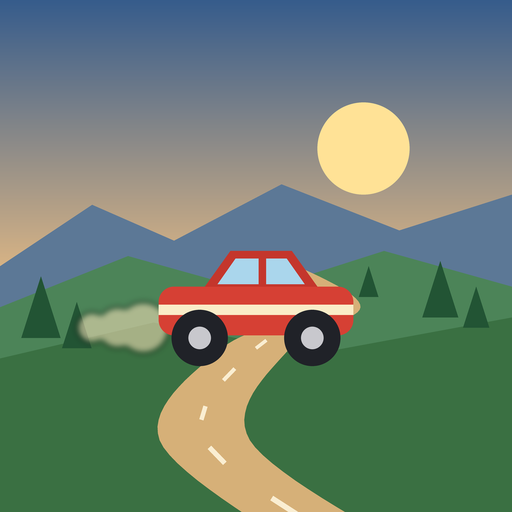

The Scenic Route
A calm rally drive
Drive a little rally car through pine lakes, golden hills, a snowy pass, a red desert, autumn woods and a coast road. No opponents. No damage. No way to lose. Find 198 things, hit the ramps and time a lap if you feel like it.
Version 0.8.1. Release notes · Backlog


What kind of game is this?
No opponents. Lap circuits are there if you want them. The only time to beat is your own.
No way to lose. No damage, no fuel, no countdowns.
The drive is the reward. Six biomes, each with its own road, look and song.
Always a way back. Reset puts you on the nearest road with no penalty.
Things to do
- Follow the roads through all six biomes, or leave them and roam.
- Find 192 keepsakes and the letters S-C-E-N-I-C. A soft glow on the ground marks them.
- Hit the wooden ramps beside the road and beat your longest jump.
- Drive through a red and cream gate to time a lap on a circuit.
- Cross the bridges and knock over the cones at the road works.
- Jump the broken bridges and earn 15 achievements.
- Switch on the Christmas theme for snowfall and a hat on the car.
- Turn on auto drive and only steer.
- Pick a handling style: Easy, Rally or Loose.
- Check your journal to see what is left.
Controls
Keyboard: arrows or WASD drive, Space drift, R reset, C camera, H handling, G auto drive, J journal, M music, X Christmas, Esc menu.
Xbox controller: left stick steer, RT gas, LT brake, A drift, Y reset, X camera, B auto drive, D-pad up journal, View or Menu opens the Menu.
Touch: drag on the left half to steer. Gas, brake and drift on the right. Menu at the top right.
Play with an Xbox controller
Any Xbox Wireless Controller with Bluetooth works. That is every Series X|S controller and the Xbox One controllers made since 2016. If the plastic around the Xbox button matches the face of the controller, it has Bluetooth. Other controllers that your phone or browser sees as a standard gamepad use the same buttons.
On Android
- Hold the Xbox button to turn the controller on.
- Hold the small Pair button on top for 3 seconds, until the Xbox button flashes fast.
- On your phone, open Settings, then Connected devices, then Pair new device.
- Tap Xbox Wireless Controller. The Xbox button stays lit when it is connected.
- Open The Scenic Route. The touch buttons hide as soon as you use the controller.
In your browser
- Connect the controller to your computer with a USB cable or Bluetooth.
- Open Play in your browser. Chrome, Edge, Firefox and Safari all work.
- Press any button once after the game loads, so the browser sees the controller.
Install on Android
- Tap Download for Android.
- Open the downloaded file.
- If Android asks, allow installs from this source.
- Tap Install, then open the game.
Android may show a Play Protect notice for apps from outside the Play Store. Version 0.8.1 installs over the last version and keeps your saves.
Feedback wanted
- How the car feels on each surface
- Whether the camera sits at the right distance
- Any spot where you got stuck
- Your phone model if you see lag